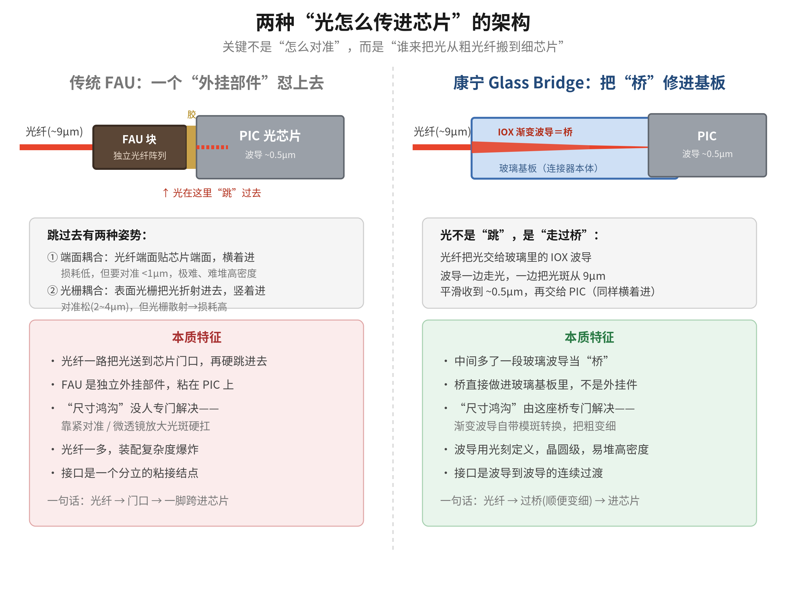
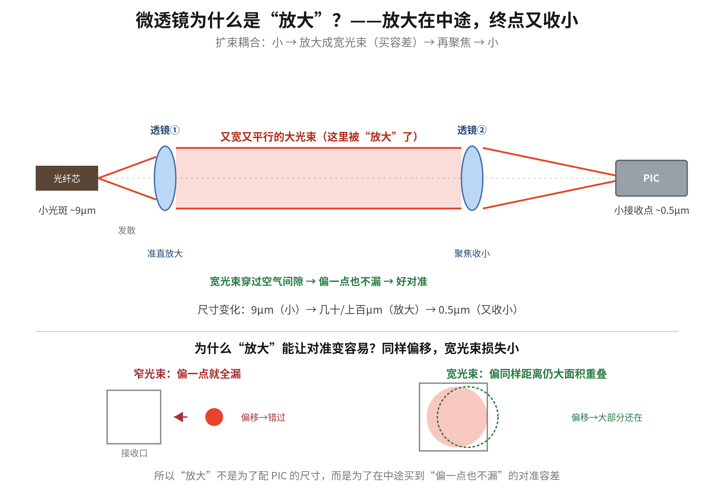
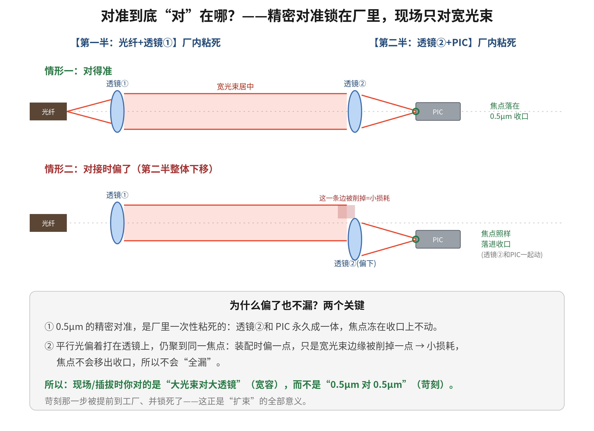

康宁 Glass Bridge 科普 · 补充篇
FAU 对比 · 微透镜耦合原理 · 对准的真相
2026 年 6 月
本文是《康宁 Glass Bridge 与玻璃光电封装》的补充篇，独立成册、不替代正篇，专门解答三个追加问题：FAU 与 Glass Bridge 在传输实现上的区别、奇景微透镜“放大”耦合的原理、以及对准究竟发生在哪里。
导读
正篇讲清了康宁 Glass Bridge 的整体架构、离子交换工艺与护城河。这份补充篇沿着随后的追问继续深入，聚焦“传输/耦合的实现细节”这一层：传统 FAU 方案和康宁玻璃波导方案，在“光到底怎么从光纤走进芯片”上的根本差异；奇景光电微透镜方案里那个反直觉的“放大”到底在做什么；以及一个最容易卡住的问题——既然最后要把光聚焦到亚微米的小点上，对准的难度为什么反而被化解了。
延续费曼式风格：先用比喻讲清直觉，再上术语与数据。涉及具体数据与产业判断处以脚注标注来源。文中关于“利空 / 机会”的表述均为技术与产业层面的事实陈述与情景分析，不构成任何投资建议。
目录
第一部分 传统 FAU 与 Glass Bridge：传输路径的根本区别 3
1.1 一句话本质：让光“跳过去” vs 给光“修座桥” 3
1.2 三个维度看清区别 3
1.3 产业含义：为什么说 FAU 厂商承压 5
第二部分 奇景微透镜的“放大”到底是什么 6
2.1 困惑澄清：放大在中途，终点又收小 6
2.2 为什么“放大”能换来对准容差 7
第三部分 对准到底发生在哪里 8
3.1 “对准”要拆成两种，别混在一起 8
3.2 平行光偏着打，仍聚到同一焦点 9
3.3 两个人传球：吸管与漏斗的比喻 9
第四部分 奇景微透镜 vs 康宁 Glass Bridge：谁更好 10
4.1 康宁理论占优的维度 10
4.2 奇景现在更实在的维度 10
4.3 投资含义（仅陈述，不构成建议） 11
附录 关键数据与来源 12
第一部分 传统 FAU 与 Glass Bridge：传输路径的根本区别
1.1 一句话本质：让光“跳过去” vs 给光“修座桥”
传统 FAU 的世界里，光纤负责把光一路运到芯片“门口”，但最后那一下，光得从光纤端面跳进 PIC——中间没有缓冲。而康宁在光纤和 PIC 之间，预先架了一段玻璃波导当“桥”，光是顺着桥平稳走过去的，过桥的同时还顺手把光斑从粗变细。

图 1 两种“光怎么传进芯片”的架构：FAU 外挂部件硬跳 vs Glass Bridge 把渐变波导修进基板
1.2 三个维度看清区别
维度一，谁来跨越“尺寸鸿沟”。光纤光斑约 9 µm、PIC 波导约 0.5 µm，差近 20 倍。FAU 方案没有专门部件去解决这个鸿沟，只能靠极致紧对准硬怼（端面耦合），或额外加微透镜放大中转（奇景微透镜的活）。Glass Bridge 的整个卖点，就是那段 IOX 渐变波导本身就是一个模斑转换器，走光时顺便把 9 µm 平滑收到 0.5 µm1。
维度二，是“外挂部件”还是“集成进基板”。FAU 是一个独立的小玻璃块，里面用 V 形槽排好光纤，做好后粘到 PIC 的边缘或表面——它是 bolt-on 的分立零件，接口是一个粘接结点。Glass Bridge 把那段波导直接做进玻璃封装基板（连接器本体）里，耦合变成了整块玻璃内部“波导到波导”的连续过渡。
维度三，光以什么姿势进芯片。FAU 有两种耦合姿势：端面耦合（光横着进，损耗低，但对准要 < 1 µm、难堆高密度）；光栅耦合（芯片表面刻光栅把光折射进去，光竖着进，对准容差松到 2~4 µm，但光栅散射导致损耗偏高）2。Glass Bridge 是横向、渐变式的连续过渡，因为有中间尺寸的渐变波导兜底，既不像端面耦合那样吹毛求疵，也不像光栅那样牺牲损耗。
| 维度 | 传统 FAU | 康宁 Glass Bridge |
| 跨越尺寸鸿沟 | 没有专门部件，靠紧对准或微透镜硬扛 | 渐变玻璃波导自带模斑转换，专门解决 |
| 与封装的关系 | 独立外挂部件，粘到 PIC 上 | 波导集成进玻璃基板本体 |
| 进芯片姿势 | 端面耦合(<1µm)或光栅耦合(2~4µm,损耗高) | 横向渐变、波导到波导连续过渡 |
| 密度与量产 | 光纤一多，装配复杂度爆炸 | 光刻定义、晶圆级，易堆高密度 |
| 一句话 | 光纤→门口→一脚跨进芯片 | 光纤→过桥(顺便变细)→进芯片 |
1.3 产业含义：为什么说 FAU 厂商承压
康宁把卖点 framing 成解决 CPO 的“尺寸鸿沟（dimensional gap）”。大行（摩根士丹利、花旗）的判断是：Glass Bridge 对 FAU 厂商构成颠覆性压力，但两年内对光模块／光收发器厂商冲击有限，因为后者离这个具体接口较远3。所谓“iFAU 演进替代方案”，指的是 FAU 阵营也在往更智能、更高密度方向进化来应对，而康宁这种“波导直接集成进玻璃”被视为更彻底的路线。
第二部分 奇景微透镜的“放大”到底是什么
2.1 困惑澄清：放大在中途，终点又收小
一个很自然的困惑是：PIC 的光斑那么小、光纤那么大，为什么说微透镜是“放大”？关键在于——放大不是发生在终点，也不是为了匹配 PIC 的尺寸，而是发生在中途、为了买对准容差。
逻辑链是这样的：光纤的小光斑（约 9 µm）发散出来后，第一片微透镜把它准直放大成一束又宽又平行的大光束（可宽到几十甚至上百微米）；这束宽光束穿过空气间隙，到对面再用第二片透镜聚焦收小，落到 PIC 上约 0.5 µm 的接收点。所以整条路径的尺寸是“小 → 放大 → 又收小”，终点其实比起点还小。

图 2 微透镜“扩束”耦合：小光斑放大成宽光束（买容差），再聚焦收小落到芯片
2.2 为什么“放大”能换来对准容差
因为对准的难易程度和光束粗细直接相关。一束很窄的光，横向偏移几微米就完全错过接收口、全漏；而一束很宽的光，偏移同样的距离，大部分光斑仍然盖在接收口上，只损失一点点。这就是行业里说的“扩束（expanded beam）”——故意把光放大成胖光束，是为了让“对得不那么准也不漏”。它把对准容差从端面耦合那种苛刻的“小于 1 µm”，放宽到“几微米也能用”。所以“放大”更准确的理解是：中途扩束以换取容差，终点再聚焦收小。
第三部分 对准到底发生在哪里
3.1 “对准”要拆成两种，别混在一起
最容易卡住的问题是：既然最后还要把光聚焦收小到 0.5 µm 落进 PIC，那不还是要对那个小点吗？放大又有什么用？解开这个结的关键，是把“对准”拆成两种，它们发生在不同的地方、不同的时间。
第一种，是光斑收小到 0.5 µm 落进 PIC 那一下的精密对准。它确实苛刻，但它是在工厂里一次性做好、然后用胶锁死的：透镜②和 PIC 被永久粘成一个整体，这个 0.5 µm 的聚焦点从此就“冻”在那儿不动了。
第二种，是装配/插拔时把两半（光纤那一半、芯片那一半）对接起来。这一步要反复做、要快、要便宜，而它发生在中间那段又宽又平行的大光束上——不是发生在 0.5 µm 的收口上。

图 3 对准发生在哪里：0.5µm 精密对准锁在厂里，现场只对宽光束；偏一点焦点也不移出收口
3.2 平行光偏着打，仍聚到同一焦点
这里有一个关键的光学事实：一束平行光，不管它偏着打在透镜②的哪个位置，只要还落在透镜口径内，都会被聚焦到同一个焦点上。所以你对接时偏了一点，宽光束只是偏着打在透镜②上，焦点不会移动，光照样落进 PIC 那个 0.5 µm 的点里，你只是边缘被削掉一丢丢、损失一点点功率而已。苛刻的对准被“前置”到了工厂并固化，留给现场的就只剩宽容的那一步。
3.3 两个人传球：吸管与漏斗的比喻
裸光纤（没有透镜）就像两个人各拿一根细吸管要对接，每次传球都得把两根吸管口对得严丝合缝，极难。扩束方案则是：每个人的吸管在工厂里就被永久接到了一个大漏斗上（吸管对漏斗这一步精密对准，在厂里做一次、粘死）。现场要做的，只是把两个大漏斗大致对上——漏斗口大，你偏一点它照样把球接住，再在内部顺回到吸管。
这也顺便点明了和 Glass Bridge 的关系：康宁走的是同一个思路——把苛刻对准前置固化，只不过它固化得更彻底。奇景是用“漏斗（透镜）+ 空气间隙”把精密对准锁在厂里；康宁是用光刻在玻璃里直接定义好波导位置，在晶圆级就把对准一次性做死，连中间那段自由空间都省了，光全程在玻璃里导着走。两者都在回避“每颗芯片现场精密对准”，区别只是固化的方式（自由空间扩束 vs 玻璃导波）和彻底程度。
第四部分 奇景微透镜 vs 康宁 Glass Bridge：谁更好
两者是解决同一个问题（光纤↔︎PIC 的尺寸鸿沟与对准）的两种不同物理路线：奇景是“自由空间扩束”，康宁是“导波过渡”。分维度看，各有所长。
4.1 康宁理论占优的维度
光的损耗：微透镜方案中间有一段光在空气里飞，要穿过透镜表面（菲涅尔反射）、还常配光栅耦合（散射损耗）；Glass Bridge 全程光被关在玻璃波导里走，没有自由空间跳跃、没有光栅散射，损耗理论上更低（康宁报 < 0.65 dB）4。密度与量产：微透镜阵列要一片片精确模压、对齐，光纤多了装配复杂度上升；Glass Bridge 的波导是光刻定义、晶圆级，天然适合堆高密度、规模化。集成度：微透镜是夹在中间的分立光学件，Glass Bridge 把光路做进了封装玻璃本体，少一层装配、少一处可能进灰尘/老化的界面。
4.2 奇景现在更实在的维度
成熟度与落地：奇景微透镜已经是台积电 COUPE 硅光方案的独家供应商，是已经量产验证、拿到设计中标的现成方案5；Glass Bridge 更新、量产证据更少。可插拔与鲁棒性：扩束方案的“大光束 + 空气间隙”对灰尘、表面污染、反复插拔反而更宽容，这是自由空间扩束连接器一直被用在可插拔场景的原因。生态依赖：Glass Bridge 要发挥优势，往往需要“玻璃基板 + TGV + 倒装”一整套生态配合；微透镜则能更灵活地嵌进现有光栅耦合架构。
| 维度 | 奇景微透镜（自由空间扩束） | 康宁 Glass Bridge（玻璃导波） |
| 传输损耗 | 有空气段、透镜反射、常配光栅散射 | 全程导波，无自由空间/光栅，理论更低 |
| 密度/量产 | 逐片模压对齐，高密度较吃力 | 光刻定义、晶圆级，易堆高密度 |
| 集成度 | 夹在中间的分立光学件 | 光路做进玻璃基板本体 |
| 成熟度 | 已量产、台积电 COUPE 独家设计中标 | 较新，量产证据较少 |
| 可插拔/鲁棒性 | 大光束 + 间隙，耐灰尘、耐反复插拔 | 依赖玻璃封装生态配合 |
4.3 投资含义（仅陈述，不构成建议）
结论是：在损耗、密度、可量产性这些“理论性能”维度上，康宁的导波路线确实更先进；但在成熟度、已落地的设计中标、可插拔鲁棒性上，奇景现在更实在。两者短期会并存——不同 CPO 架构（光栅耦合的 COUPE vs 边缘耦合的玻璃方案）会各自选用更搭的耦合器。技术方向上康宁更具颠覆性，但产业替代要看量产成本、良率、客户迁移速度，需要时间兑现6。
附录 关键数据与来源
| 数据 / 观点 | 来源 |
| 端面耦合 <1µm；光栅耦合容差 2~4µm 但散射损耗高 | ManufacturingTomorrow；Vik's Newsletter《Grating Coupled COUPE for CPO》 |
| IOX 波导对接 SMF-28 损耗 <0.65 dB；传输 <0.1 dB/cm | IMAPS《Glass Substrate for Co-Packaged Optics》；康宁 GlassBridge 产品页 |
| 大行：FAU 厂商承压，光模块两年内相对安全 | BigGo Finance（摩根士丹利/花旗）；AllWeatherFinance |
| 奇景是台积电 COUPE 微透镜独家供应商 | TechNews，郭明錤（2025-01-23） |
说明：本文为科普整理，不构成任何投资建议。
康宁 IOX 玻璃波导：对接 SMF-28 耦合损耗 < 0.65 dB、1310nm 传输损耗 < 0.1 dB/cm。来源：IMAPS《Glass Substrate for Co-Packaged Optics》、康宁 GlassBridge 产品页。↩︎
端面耦合需对准 < 1 µm；光栅耦合对准容差约 2~4 µm，但有光栅散射损耗。来源：行业资料 ManufacturingTomorrow、Vik's Newsletter《Grating Coupled COUPE for CPO》。↩︎
摩根士丹利、花旗观点：GlassBridge 两年内不太可能颠覆光收发器格局；FAU 厂商面临颠覆性压力，AI 光模块公司短期相对安全。来源：BigGo Finance、AllWeatherFinance。↩︎
康宁 IOX 玻璃波导：对接 SMF-28 耦合损耗 < 0.65 dB、1310nm 传输损耗 < 0.1 dB/cm。来源：IMAPS《Glass Substrate for Co-Packaged Optics》、康宁 GlassBridge 产品页。↩︎
奇景光电是台积电 COUPE 硅光方案微透镜阵列的独家供应商。来源：TechNews，郭明錤（2025-01-23）。↩︎
摩根士丹利、花旗观点：GlassBridge 两年内不太可能颠覆光收发器格局；FAU 厂商面临颠覆性压力，AI 光模块公司短期相对安全。来源：BigGo Finance、AllWeatherFinance。↩︎